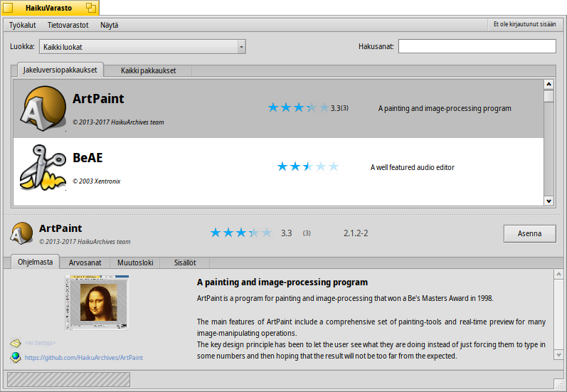
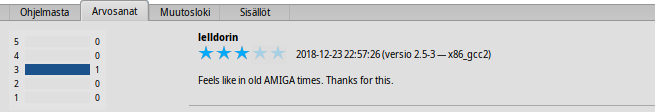
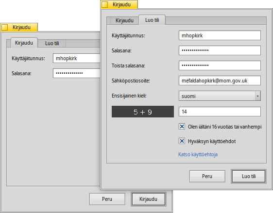
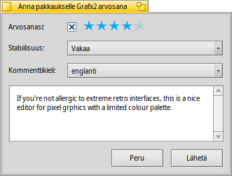

Suomi
Suomi Català
Català Deutsch
Deutsch English
English Español
Español Français
Français Italiano
Italiano Magyar
Magyar Polski
Polski Português
Português Português (Brazil)
Português (Brazil) Română
Română Slovenčina
Slovenčina Svenska
Svenska 中文 ［中文］
中文 ［中文］ Русский
Русский Українська
Українська 日本語
日本語| Hakemisto |
| The Filter The List The Info Area Tools and Show Creating a User Account Rating and Commenting |
 HaikuVarasto
HaikuVarasto
| Työpöytäpalkki: | ||
| Sijainti: | /boot/system/apps/HaikuDepot | |
| Asetukset: | ~/config/settings/HaikuDepot/main_settings ~/config/cache/HaikuDepot/ - Cached icons, screenshots, descriptions etc. |
HaikuDepot is the central application when it comes to managing your software packages. With it you can browse and search through package repositories and install, update and uninstall packages. By default, HaikuDepot starts up with a list of "Featured packages", software that's deemed interesting to many users.
As soon as you enter something in the box, the display changes to smaller icons and more information arranged in columns.
 Suodatin
Suodatin
Ylimpänä löydämme muutamia keinoja suodattaa alla saatavilla olevien pakkausten luetteloa:
ponnahdusvalikko sallii sinun rajoittaa luettelon yksittäisiksi luokiksi kuten "Audio" tai "Pelit".
The pop-up menu determines which online repos are queried or if only those packages are shown, that were installed from somewhere other than an online repo ("Local"). Maybe from an USB thumb drive or downloaded from some website or a package that you've built yourself.
-tekstikenttäsuodattimet sitten luetteloivat ne pakkaukset, jotka on kirjoitettu (välilyönneillä eroteltuina) merkkijonoina niiden nimissä tai kuvauksissa.
Luettelo
Kuten mikä tahansa Seuraaja-ikkuna, voit valita asiayhteysvalikosta mitkä sarakkeet näytetään napsauttamalla sarakeotsaketta hiiren kakkospainikkeella. Ykköspainike lajittelee luettelon tuon sarakkeen mukaiseksi. Tietysti voit järjestää sarakkeet uudelleen raahaamalla ne uuteen paikkaan.
Pakkauksen tilasarakkeessa voi olla yksi seuraavista tiloista:
: Pakkaus on asennettu ja valmiina käytettäväksi.
: The package exists in that repository and can be downloaded and installed. If there are any dependencies on other packages, you'll be informed of that while installing and get the choice of downloading/installing all that's necessary.
: Odottaa näytetään pakkaukselle, jota jonotetaan lataukseen/asennukseen. Pakkauksen latauksen aikana edistyminen näytetään prosentteina.
: Asennettuun pakkaukseen on saatavilla uudempi versio.
Voit tarttua pisteviivaan pakkausluettelon välissä ja vaakasuora tietoalue muuttaa pakkausluettelon kokoa.
Tietoalue
Alimmaisena on alue, joka näyttää tietoja pakkauksesta, joka on parhaillaan valittuna luettelossa.
Pakkausnimen, tekijän, arvosanan ja version oikealla puolella on painike, joka – riippuen pakkauksen nykyisestä tilasta – sallii sinun , tai se. Jos pakkaus on jo asennettu, löydät täältä lisäpainikkeen, joka sovelluksen.
Below are four tabs: About, Ratings, Changelog and Contents.
Ensimmäisessä välilehdessä on yksityiskohtainen pakkauskuvaus sekä kuvakaappaukset ja yhteystiedot ja pakkausta ylläpitävän ryhmän verkko-osoite, jos sellainen on saatavilla. Kuvakaappauksen pienoiskuvan napsauttaminen avaa uuteen ikkunaan kuvan suurikokoisemman version
The second tab shows ratings and comments of users, if available.
To the left is a statistic, showing the number of stars (1 to 5) the package got from how many users.
In the middle are user comments with their nickname, the number of stars they gave the package and which version of the package they were rating or commenting on. You'll find more on how to rate a package yourself further down.
Here you find a detailed history of all the versions of the package that have been released so far, if the maintainer of the package provides that information.
The last tab shows all the files and folders a package contains. This only works for already downloaded packages.
Tools and Show
In the menu at the top of the window, you'll find an item to . This will request an up-to-date list of all available packages from the repositories. The other item is to . It opens the Repositories preferences, to add/remove or disable and enable repositories.
Under you can deactivate . Now you'll always see all packages and not just the featured ones when HaikuDepot starts up or the search text field is empty.
Furthermore, you can choose to also Show and in the packages list. For the normal user those are of no interest and would only clutter the list. They are important, however, for people who need the libraries, headers etc. of a package to develop and compile programs depending on them.
Of more interest are the options to only show and , which are pretty self-explanatory.
Käyttäjätilin luominen
Voidaksesi antaa pakkaukselle arvosanan sinulla on oltava tili Haiku Depot-palvelimella, joka palvelee kaikkia pakkauksia ja kirjaa arvosanat sekä käyttäjäkommentit. Voit luoda tilin HaikuVarasto-sovelluksella napsauttamalla valikon oikeassa yläkulmassa, jossa näytetään nykyinen tila: . Valinta avaa ikkunan kahdella välilehdellä; yhdellä voit kirjoittaa käyttäjätunnuksesi ja salasanasi (sitten kun sinulla on ne) kirjautuaksesi, ja toisessa luot uuden tilin:
Tilin luomiseksi sinun on:
- käytettävä käyttäjätunnusta, joka koostuu pienistä kirjaimista ilman erikoismerkkejä (äöå)
- käytettävä salasanaa, jossa on vähintään 8 merkkiä, joista vähintään 2 on suuria kirjaimia ja 2 numeroita
- tarjottava sähköpostiosoite (jos haluat uuden salasana lähetettäväksi siinä tapauksessa että unohdat sen)
- ratkaistava captcha-kuva-arvoitus
Kirjautumisen jälkeen HaikuVaraston valikon yläoikealla lukee , mikä näyttää käyttäjätunnuksesi. Valikko tarjoaa nyt sinulle tai .
Arvosanat ja kommentointi
Kun olet luonut käyttäjätilin ja kirjautunut sisään, voit antaa pakkaukselle arvosanan ja jättää kommentin, jos haluat. Liikuta vain hiiren kohdistinta pakkauksen tietoalueen arvosanatähtien päällä ja ne muuttuvat -painikkeeksi. Napsauta sitä arvosanaikkunan avaamiseksi:
Here you move the mouse over the stars to light them up and choose your rating, you can also choose from a number of levels to judge the stability of the application and pick the language of your optional comment. To make a comment meaningful, you should have worked with the application you're about to rate for a while to become familiar with its features, bugs and quirks. And don't write the next great American novel... keep it short, sweet and polite. :)
After you click the data is transmitted to the server. You may have to go to the menu to before you can see your changes.
Milloin tahansa voit palata ja muokata kommenttiasi tai antaa arvosanan uudelleen. Voit myös piilottaa arvioinnin muilta käyttäjältä poistamalla valinnan valintaruudusta .